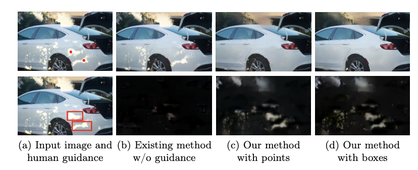
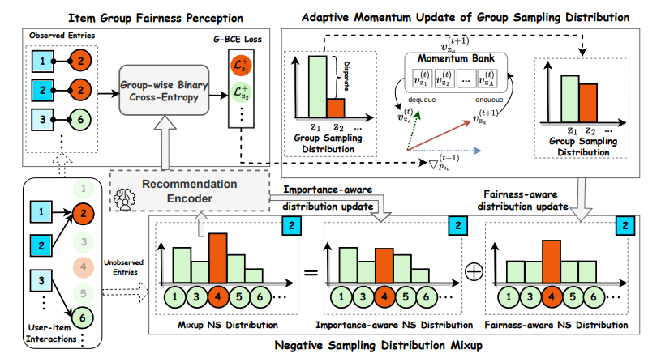
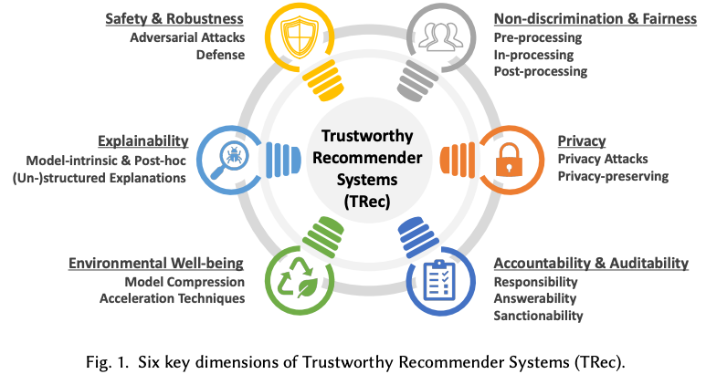

|
Xiao Chen
I am a Ph.D. candidate from The Hong Kong Polytechnic University,
where I am fortunate to be advised by IEEE fellow Qing Li and
Professor Zhaoxiang Zhang. My research interest lies in Multimodal retrieval and recommendation, Trustworthy generative models and its applications. One ultimate goal is to build general recommendation learning systems that is capable of learning continuously online once deployed. (no taking it offline, no concept of pretraining, finetuning, just learn as it interacts with the world.)
I obtained M.S. with honors from ZJU CS.
Email /
CV /
Google Scholar /
Twitter /
Github
|
|
Recent News
- [12/20/2024] Grateful to get AAAI-25 Student Scholarship.
- [12/10/2024] Our paper on flexible reflection removal is accepted by AAAI2025.
- [05/01/2023] Join us in the “Trustworthy Recommender Systems” tutorial in The Web Conference 2023. See you in Austin!
- [01/25/2023] Our work on Fairly adaptive negative sampling is accepted by the The Web Conference 2023.
|
|

|
FIRM: Flexible Interactive Reflection Removal
Xiao Chen,
Xudong Jiang,
Yunkang Tao,
Zhen Lei,
Qing Li,
Chenyang Lei,
Zhaoxiang Zhang
AAAI, 2025
|
|

|
Fairly Adaptive Negative Sampling for Recommendations
Xiao Chen,
Wenqi Fan,
Jingfan Chen,
Zhaoxiang Zhang,
Qing Li
WWW, 2023
|
|

|
A Comprehensive Survey on Trustworthy Recommender Systems
Wenqi Fan,
Xiangyu Zhao,
Xiao Chen,
Jingran Su,
Jingtong Gao,
Lin wang,
Qidong Liu,
Yiqi Wang,
Han Xu,
Lei Chen,
Qing Li
Arxiv, 2023
|
|
Services
Reviewer: ICLR, NeurIPS, ECCV, WWW, KDD, AISTATS, TOIS, TKDD.
|
|
Personal
I enjoy hiking, tennis, ukulele, hip-hop, and photography beyond research time.
|
|
{kind=link}